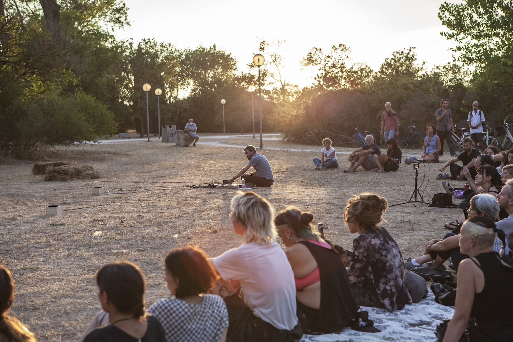
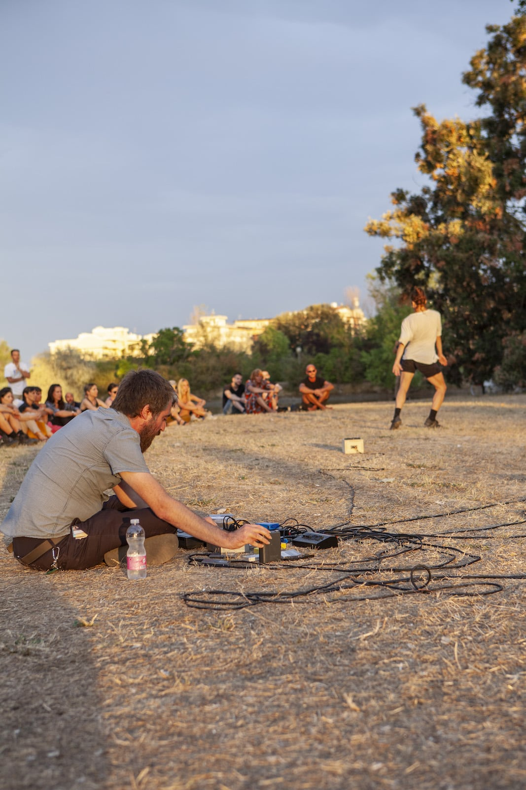
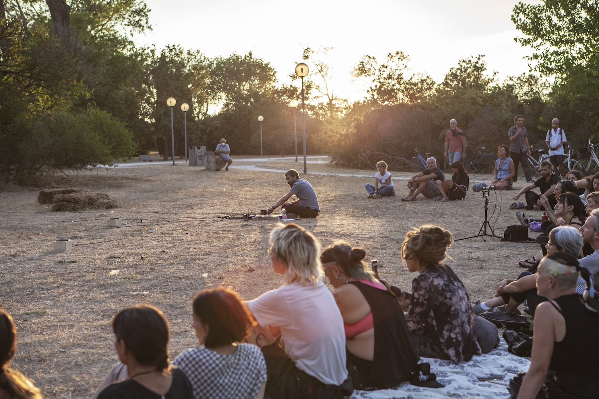
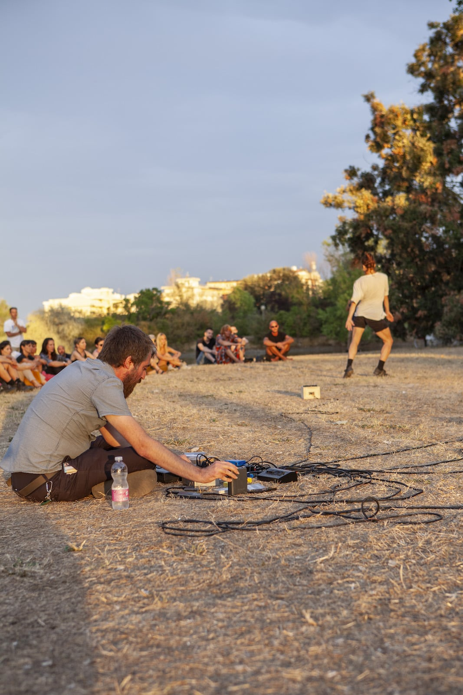
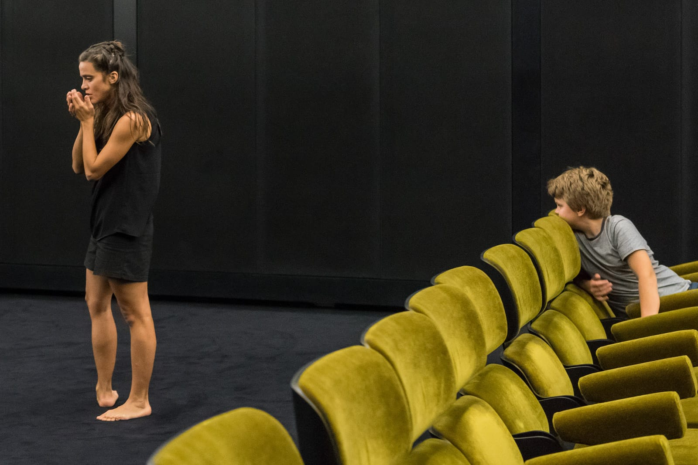
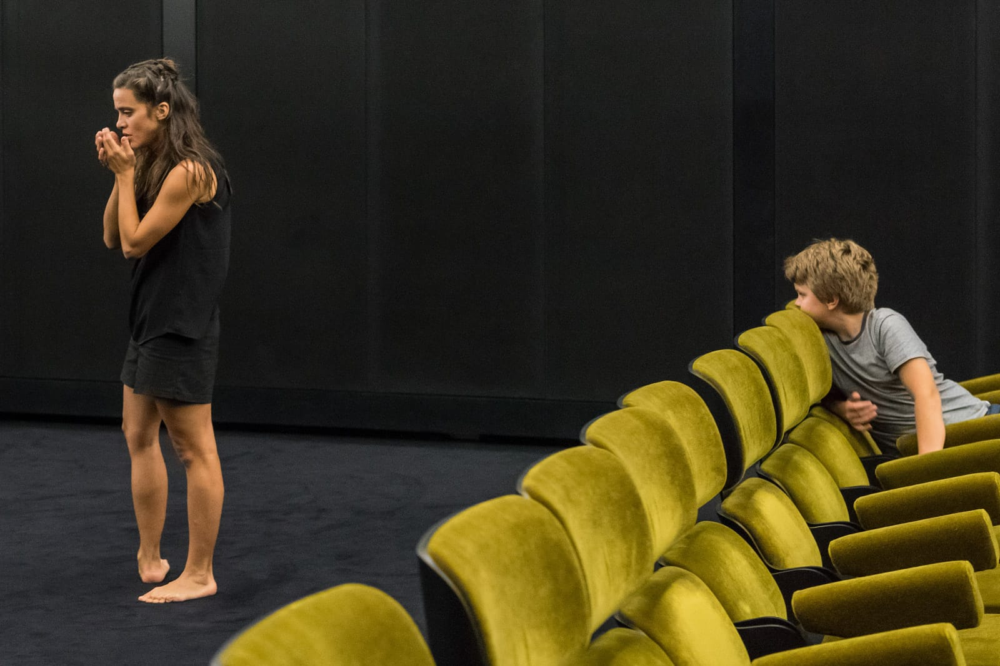

ARCIPELAGO
Arcipelago è un progetto coreografico composto da serie di azioni costruite e vissute in spazi non teatrali.
Gli episodi di Arcipelago accadono all'interno di luoghi vissuti e definiti in quanto dimore, soggiorni, ripari, ma non necessariamente case.
Arcipelago BookletLa collaborazione con il musicista e artista del suono Glauco Salvo è incentrata sull'interazione tra spazio, suono e movimento, in una performance dal formato aperto e non frontale, adattabile a spazi teatrali e non convenzionali. Le caratteristiche dello spazio stesso sono il punto di partenza per la performance, in cui danzatrice e musicista utilizzano l'improvvisazione come principale strumento per attivare percezione e immaginazione, trasformando lo spazio in un luogo temporaneo e irreale da abitare con la propria pratica.
La performance è realizzata con dispositivi audio portatili, non richiede corrente elettrica e può essere adattata a ogni tipologia di spazio.
Ideazione Annamaria Ajmone, Glauco Salvo.
Parco di Levante (Cesenatico), 08. 09. 2022 – Elementi, a cura di MU e MAGMA
 



A t t i k a è un progetto infinito, aperto e nomade, mosso da un interesse reciproco per le pratiche interpretative del paesaggio, la sua natura esplicita e implicita e la sua performatività.L'incontro con Industria indipendente è un primo passo verso la creazione di uno spazio in rivolta, che si prenda cura dei luoghi specifici delle città. È un'occasione per spostare lo sguardo e il tempo a favore di un terreno fertile dove è ancora possibile immaginare futuri possibili, luoghi in cui i desideri e le esistenze possono respirare.
Progetto di Annamaria Ajmone e Industria Indipendente (Martina Ruggeri e Erika Z. Galli). Con Annamaria Ajmone, Acchiappashpirt, Erika Z. Galli, La Pineta, Marco D'Agostin, Emanuela Villagrossi, Front De Cadeaux, Industria Indipendente, Maria Giovanna Cicciari, Le Spiagge bianche (Lillatro), Nastro, Villa “La Scogliera”, Palm Wine, Valerio Sirnå, Steve Pepe, Benoise, Roberta Zanardo. Produzione Cab 008 con il sostegno di Centro di Residenza della Toscana (Armunia – CapoTrave / Kilowatt), Regione Toscana, MiBACT e Comune di Firenze.


Foto © Antonio Ficai
Slide in B è una durational performance sulla possibilità di abitare uno spazio specifico trasformandolo nell'arco di diverse ore in un luogo intimo, ma mai privato. Eseguita a Palazzo Durini (Milano), Slide in B è una commistione di molteplici elementi. L'ambiente stesso, i suoi volumi, le pareti, gli accessi, le decorazioni. La volontà stessa di Annamaria Ajmone, volta a vivere e trasformare lo spazio attraverso la ricerca e l'esperienza del movimento. Il terzo elemento è il contributo di Caned Icoda che, partendo dall'idea di collaborazione tra spazio e suono, ha sviluppato un abito e un suono per l'ambiente e un abito e un suono per la danza. L'impianto audio stesso diventa un elemento decorativo, presente e determinante per la dinamica della performance. Le possibilità del suono sgorgano ripescando e rielaborando in tempo reale elementi dalla collezione Fluxus della Fondazione Bonotto: Poesia Concreta, Visiva e Sonora. Quarto e fondamentale elemento è lo spettatore, sostare, attraversare, andare e tornare, scegliendo il proprio spazio e il proprio tempo di permanenza.
Ideazione e danza Annamaria Ajmone. Costumi e live audio Caned Icoda. Organizzato da Danae Festival in collaborazione con Fondazione Bonotto. Produzione Cab 008 con il sostegno di Regione Toscana e MiBACT.


Video © Maria Giovanna Cicciari
Foto © Michela di Savino
For this durational performance, set within the current exhibitions, Annamaria Ajmone will perform, in improvisation, to the soundtrack without images, of "La Région Centrale", the 1971 work by Canadian filmmaker Michael Snow. "La Région Centrale" was set up as an experiment in filmmaking and shot with endurance, over 24 hours, with a custom-made robotic arm holding the camera as it scanned a landscape void of human bodies. Through her precise, strange and contorted movements, Annamaria Ajmone articulates the grotesque human-ness of her body. De La, is a performance that ushers the performer and her public across the space of the gallery, through rooms, under doorways, against walls, subverting the traditional viewing experience and treating the whole gallery as a stage. By responding to her environment, making eye contact and taking moments of intentional and uncomfortable pause, Ajmone reverses the role of viewer and performer, she reads her public while being read. “Viewers” are invited to come and go for the duration of the performance. (Testo di Lauren Mackler).
Ideazione Annamaria Ajmone. Consulenza artistica Simone Bertuzzi e Lauren Mackler. Abito Caned Icoda. Organizzazione e cura Night Gallery e Public Fiction.


Video © Night Gallery
Con Antala, il primo piano dei Musei Civici di Reggio Emilia diventa uno spazio e un tempo di incontro in cui si alternano i contorni, i limiti e i confini. Il corpo si espone, diviene e costantemente muta. L'articolazione del movimento avviene direttamente in scena, costruendo un discorso che attraverso le suggestioni ricevute rielabora, trasforma e amplifica gli spazi interni ed esterni a sé. Descrivere realisticamente una dimensione fantastica è uno dei modi possibili o forse l'unico per parlare davvero del mondo. L'innata e istintiva tensione dell'uomo verso l'innafferabile e il multiforme e il suo desiderio di coglierli cedono infatti di fronte all'inesausto differenziarsi degli elementi.Il costume è composto da immagini prese da antichi erbari e bestiari stampate su tessuto. Nella Sala dei Marmi viene riprodotto integralmente l'ep di Don't Dj "Authentic Exoticism".
Di e con Annamaria Ajmone. Costume Lucia Gallone. Consulenza musicale Simone Bertuzzi. Organizzazione e cura Giulia Basaglia. Produzione Cab 008, coproduzione Fondazione / Teatri di Reggio Emilia, Musei Civici di Reggio Emilia con il sostegno di Regione Toscana e MiBACT.


Foto © Alfredo Anceschi
Prima illustrazione di David Kandel da Hieronymus Bock, “Kreutterbuch” (1580)
Ultima illustrazione da Leo Lionni, "Botany of the Elsewhere" (1976)
Solo è un'azione coreografica in situ per il Cinema della Fondazione Prada di Milano, commissionata da Virgilio Sieni e realizzata per il progetto coreografico “L'atlante del Gesto”. Pensato come un'unica azione coreografica, Solo si dipana in tutti gli spazi del cinema e della durata di un'ora e dieci minuti. L'ambiente sonoro è costituito dalla colonna sonora originale di “La Région Centrale” di Micheal Snow (1971). Considerato come una delle opere fondamentali del cinema strutturale, il film registra un paesaggio canadese compiendo tutti i movimenti di macchina possibili per 180 minuti. In Solo, le immagini vengono rimosse lasciando i soli suoni elettronici e sintetici della colonna sonora. Il pubblico si muove liberamente nello spazio che viene continuamente mutato dal duplice movimento del performer e del pubblico. La distanza che si crea tra il pubblico e il performer è continuamente modificata e lo spazio si amplifica e si ristringe. L'azione coreografica gioca su continui cambi di intensità e velocità del movimento, sulla ripetizione e sulla stasi, il tempo è inteso come tempo “vissuto” e non come performativo.
Ideazione Annamaria Ajmone. Consulenza artistica Simone Bertuzzi. Organizzazione e cura Giulia Basaglia. Ambiente sonoro Michael Snow, “La Région Centrale”.
 


Foto © Ela Bialkowska
Still da Micheal Snow, "La Région Centrale"
Video © Andrea Cavallari
Büan è la parola che nel tedesco antico significava abitare, divenuta poi nel tedesco moderno Bauen, costruire. Dimora è senz'altro luogo di soggiorno, riparo, ma non necessariamente una casa: può essere un luogo di abitazione temporanea, di sosta, o nel caso delle gondole allo Squero di San Trovaso, di riparazione e rimessa in sesto. Negli spazi dello Squero, Büan sviluppa per tre giorni pratiche di abitazione temporanea, in cui la danza si immerge nel luogo come ne fosse un elemento integrante, tracciando passaggi, vie, percorsi, scoprendo suggestioni nuove difficilmente prevedibili, in un continuo rimando tra l'esterno, sempre più in rapido e continuo mutamento, e l'interno, che è invece dimora, appunto, di echi e memorie ancestrali. Büan è il risultato dell'invito di Virgilio Sieni a partecipare alla Biennale College Danza 2015.
Di e con Annamaria Ajmone. Consulenza musicale Federica Zamboni. Organizzazione e cura Giulia Basaglia. Produzione Biennale di Venezia 2015.


Foto © Akiko Miyake; © Alberto Calcinai
Radura è un video che documenta e raccoglie tutte le sessioni di improvvisazione girate da Maria Giovanna Cicciari con Annamaria Ajmone in ordine cronologico dal 2012 al 2015. Si basa su un metodo di creazione che considera sia chi riprende che chi viene ripreso. Il campo lungo permette di catturare l'improvvisazione di danza in tutta la sua complessità e di creare organicamente una composizione interna delle immagini. Il risultato è un flusso di immagini che proviene da un archivio interno del corpo. La macchina fotografica diventa uno strumento per documentare il tempo e lo spazio ma è anche protagonista, un attore coinvolto nell'azione. Il video documenta anche l'esplorazione di diversi luoghi naturali, boschi o aree verdi metropolitane, per tentare poi di ricostruire l'improvvisazione nel classico studio di prova. I pochissimi tagli di montaggio sottolineano questa idea specifica di andare e venire, dall'esterno verso l'interno, passando da un'improvvisazione a flusso libero, a un modo più strutturato di muoversi.
Ideazione Annamaria Ajmone, Maria Giovanna Cicciari. Video Maria Giovanna Cicciari. HD e S8 trasferito su HD, 57' (in loop).


Still © Maria Giovanna Cicciari
Innesti è un'indagine sul rapporto tra spazio e movimento, tra le prime esperienze di Arcipelago. All'interno di un costante scambio di distanze, lo spazio viene analizzato come struttura fisica anziché dimensione culturale. Il corpo è infine un elemento all'interno della stanza, come somma di geometrie e di ritmi prodotti. Realizzato all'Institut Culturel Italien di Parigi nel 2015, Innesti è una traccia nel video realizzato da Sara Bonaventura: "Da regista, ho cercato di non uscire dal tema della coreografia, ... Ho raccolto questi frammenti del passato, pensando a ciò che si è perso dell'esperienza performativa". Ho intrecciato la documentazione con altre riprese girate in luoghi poco suggestivi e anonimi di Parigi, soprattutto il Petit Ceinture, una ferrovia abbandonata che un tempo circondava la città, come metafora di un'azione a tempo chiuso e site-specific, che potrebbe rimanere aperta a un diverso significato, nel cinema di un altro luogo".
Ideazione Annamaria Ajmone. Consulenza musicale Simone Bertuzzi. Organizzazione e cura Giulia Basaglia. In collaborazione con Mosaico Danza / Interplay festival. Video Sara Bonaventura. HD, colori, 16/9, 19' 59''.


Foto © Marina Mers
Still e video © Sara Bonaventura